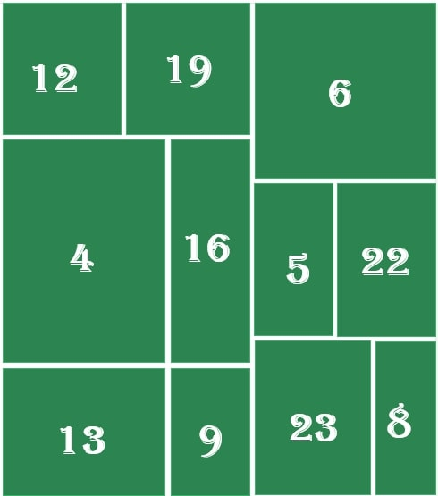

+<!DOCTYPE html>
<html>
    <head>

    </head>
    <h2 class="alignfull has-text-align-center" id="calendrier-de-l-avent-digital-de-puteaux"><strong><em>Calendrier de l'Avent digital de Puteaux</em></strong></h2>
    </head>


    <body>
    	<!-- Corps de la page -->	
		<!-- <div><p class="arrondi2 bordure">intérieur rect</div> -->            
        <div class="cat">
        
        </div>
        <br>Bienvenue sur le calendrier de l'avent digital de la ville de Puteaux, à partir du 1er décembre 2022 vous allez pouvoir ouvrir une nouvelle case chaque jour et découvrir les surprises que nous vous avons réservé!<br>C'est parti !!!<br>

        </p>

        <input type=button onclick=window.location.href='maps.html'; value=Retour sur mon site />
    
    </body>
</html>